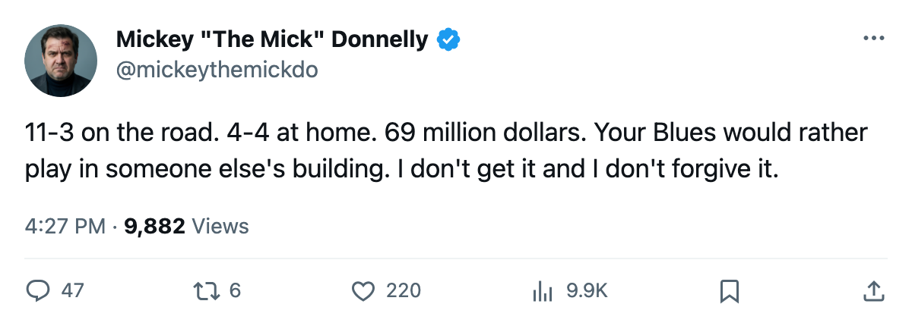
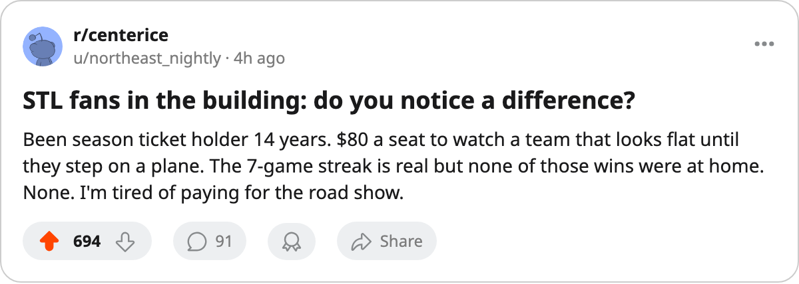

11-3 ON THE ROAD, 4-4 AT HOME: YOUR $69.76M BLUES ARE BETTER WITHOUT YOU
St. Louis is on a 7-game streak, sits 3rd in the league, and has won a coin flip's worth of home games.
 Mickey "The Mick" DonnellyColumnist, ex-goalie · The Penalty Box
Mickey "The Mick" DonnellyColumnist, ex-goalie · The Penalty Box St. Louis Blues is on a 7-game winning streak, sits 3rd in this league with 33 points, and has played worse hockey in front of 15,001 people paying $80 a seat than they have in any other building. 4-4 at home. 11-3 on the road. They win somewhere else.
St. Louis Blues is on a 7-game winning streak, sits 3rd in this league with 33 points, and has played worse hockey in front of 15,001 people paying $80 a seat than they have in any other building. 4-4 at home. 11-3 on the road. They win somewhere else.
The payroll is $69.76M, the 3rd highest in this league.  Keith Tkachuk90 is putting up 30 points in 22 games at 21.1 minutes a night. The club morale sits at 97.0, the 2nd highest figure the Bureau publishes. Every number on the page says this room is fine. Every number except the one that says 4-4 in your own building.
Keith Tkachuk90 is putting up 30 points in 22 games at 21.1 minutes a night. The club morale sits at 97.0, the 2nd highest figure the Bureau publishes. Every number on the page says this room is fine. Every number except the one that says 4-4 in your own building.
$80 A SEAT, 4 WINS IN 8 CHANCES
15,001 people. $80 a ticket. Eight home games. Four wins. The revenue is $36.68M and the profit is $10.39M, which means somebody in that front office is content with a .500 product in the building where the money comes from. I am not.
They have won 11 of 14 on the road and half their games at home. Same skates, same puck, same lineup card. The guys on the ice play for the visitors.
 Jamal Mayers72 is the most obvious example of the rot. Thirty-one years old, base rating 80 in the Bureau's Book, zero points in 13 games, sitting at 72 with the Development Index 4 below his base. A man rated 80 who dresses 13 times without a point is a man the coach should be sitting. He is not the only one. The 4-4 record does not happen because one 31-year-old is cold. It happens because the whole team treats home ice like an away trip.
Jamal Mayers72 is the most obvious example of the rot. Thirty-one years old, base rating 80 in the Bureau's Book, zero points in 13 games, sitting at 72 with the Development Index 4 below his base. A man rated 80 who dresses 13 times without a point is a man the coach should be sitting. He is not the only one. The 4-4 record does not happen because one 31-year-old is cold. It happens because the whole team treats home ice like an away trip.
TONIGHT: THE ROAD TEAM MEETS THE UNBEATEN HOME TEAM
 Nashville Predators is 6-0 at home. St. Louis Blues is 11-3 on the road. Tonight those two records collide in Nashville.
Nashville Predators is 6-0 at home. St. Louis Blues is 11-3 on the road. Tonight those two records collide in Nashville.  David Legwand89 has 31 points in 20 games for the Predators at $1.71M per point. The Blues pay $2.11M per point for Tkachuk, Brandon Reid79 and their 33 points.
David Legwand89 has 31 points in 20 games for the Predators at $1.71M per point. The Blues pay $2.11M per point for Tkachuk, Brandon Reid79 and their 33 points.
The series is split: St. Louis won 1 in regulation, Nashville won 1 in overtime, 6-5 across 2 games for the Blues.
If St. Louis wins this, they go 12-3 on the road and stay 4-4 at home. The streak gets longer, the gap gets uglier, and 15,001 people will walk out of a building their team treats like a rest stop. Pay $80 to watch a .500 club at home. Buy the road package. That's where the product is.

